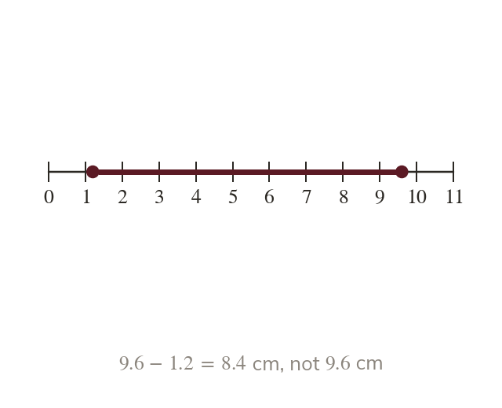

Reading from the zero mark
Measure from the ruler's zero mark, never from its end. The end may be worn or have a border before zero.
A length is always measured from the ruler's zero mark, never from its physical end - the end may be worn, chipped, or printed with a border before the zero. Line up the zero mark with the start of the object every time.